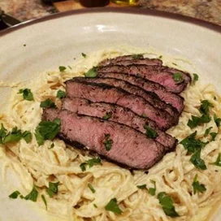

Steak Alfredo Recipe

Descripton
This is a take on a classic dish, this steak alfredo will blow your mind.
It is prepared with the upmost care and consideration for the meat, which
is a main staple in this dish. Let your taste buds melt to it's elegant flavor.
Alfredo Ingredients
- 1 1/2 cups of 2% milk
- 1 1/2 cups of heavy cream
- 1/2 cup of parmasean cheese
- 1/2 cup of Romano cheese
- 6 jumbo egg yolks
- salt and ground black pepper to taste
Marinade Ingredients
- 1 1/2 cups italian-style salad dressing
- 1 tablespoon fresh rosemary
- 1 tablespoon lemon juice
- 2 poinds flat iron steak, cut into 3 inch squares
- 4 cups chopped fresh spinach
- 4 tablespoons crumbled Gorgonzola cheese, divided
- 1 pound dry fettuccine pasta
- 2 tablespoons balsamic glaze
- chopped fresh parsley, or as needed
Prepartion and Steps
- Heat milk and saucepan over medium heat until simmer.
- Slowly whip in Parmesan and Romano cheese then remove from heat.
- Whisk egg yolks together in a heat-proof bowl then slowly add 1/4 cup of hot sauce.
- Whisk egg mixture into saucepan slowly, season with salt and pepper.
- Allow alfredo sauce to cool and refrigerate until needed.
- Combine salad dressing, rosemary, and lemon juice to a large bowl.
- Add steak, stir, and coat the mixture.
- Marinate in refrigerator for 4 hours.
- Preheat an outdoor grill for medium heat and lightly oil the grate.
- Fill a large pot with lightly salted water and bring to a boil.
- Cook fettucine at boil until tender, about 8 minutes.
- Heat 2 cups of refrigerated alfredo sauce over medium heat.
- Add spinach and 2 tablespoons of Gorgonzola cheese.
- Remove steak from marinade and cook for 5 to 10 minutes.
- Pour hot alfredo sauce into a large serving bowl, add pasta, and stir until combined.
- Add grilled steak and drizzle the meat with balsamic glaze. Garnish with parsley.